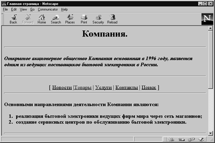
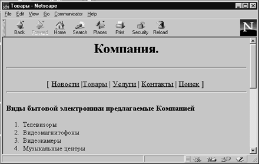

Все рассмотренные выше средства управления отображением текста являются безусловно важными, но только дополнительными к основному тэгу документа - гипертекстовой ссылке. Для записи гипертекстовой ссылки используется контейнер <А...>......</А>, который называют "якорь" (аnchor). Якорь имеет несколько атрибутов, главным из которых является НREF (НуреrТехt Reference). Простую ссылку можно записать в виде:
<А НREF="http://роlyn.net.kiae.su/index.shtml"> Индекс базы данных "Полынь" </А>
где значением атрибута HREF является адрес документа " index.shtml " на машине " роlyn.net.kiae.su ", доступ к которой осуществляется по протоколу НТТР. Форма записи этого адреса называется универсальным локатором ресурсов (Universe Resource Locator) и является составной частью технологии WWW.
Содержание контейнера А, заключенное между тэгом начала и тэгом конца, выделяется в тексте цветом, определенным для контекстных гипертекстовых ссылок.
Одной из особенностей создания Web-сервера является то, что представленную на нем информацию желательно разбить на отдельные части, которые могут быть выведены на экран без необходимости его прокрутки. Организация связей между отдельными частями и осуществляется с помощью гипертекстовых ссылок.
Рассмотрим это на примере.
Одним из типичных приемов создания Web-сервера фирмы является представление на первой страницы перечня основных частей, в которые входят: Новости, Товары, Услуги, Контакты, Поиск.
Вставим список этих частей в наш пример вместе с гипертекстовыми ссылками на соответствующие документы. При этом можно указывать не полный адрес URL.
<HTML> <HEAD> <TITLE> Главная страница</TITLE> </HEAD> <BODY> <H1 ALIGN=CENTER>Компания.</H1> <HR> <H3 ALIGN=LEFT><I>Открытое акционерное общество Компания основанная в 1996 году, является одним из ведущих поставщиков бытовой электроники в России.</I></H3> <HR> <p ALIGN=CENTER> <font color="glava~10.shtml#400040" size="4">[ <a href="news.shtml">Новости</a> | <a href="products.shtml">Товары</a> | <a href="servis.shtml">Услуги</a> | <a href="contact.shtml">Контакты</a> | <a href="search.shtml">Поиск</a> ] </font> <HR> <H3>Основными направлениями деятельности Компании являются: <OL> <LI>реализация бытовой электроники ведущих фирм мира через сеть магазинов; <LI>создание сервисных центров по обслуживанию бытовой электроники.</H3> </OL> <HR> <H3><U><FONT COLOR=RED> Компания ищет агентов по сбыту бытовой электроники.</FONT></U></H3> <H5 ALIGN=CENTER>Контактная информация</H5> <UL> <LI>Telephone (123) 12-34-56 <LI>FAX (123) 12-34-56 <LI>Почтовый адрес 123456 г. Город, ул Лесная, 106 <UL TYPE=circle>Электронная почта
<LI>Общая информация: abc@abc.su <LI>Продажи: abc@abc.abc.su</UL></UL> <BR><BLINK>Copyright</BLINK> љ 1997 Компания </BODY> </HTML>
На экране это будет выглядеть следующим образом. При нажатии на ссылку "Товары" в окно броузера будет загружен новый документ.

Рис. 1.7. Гипертекстовые ссылки
Щелкните здесь, чтобы просмотреть пример 1.7 в браузере

Рис. 1.8. Новый документ при щелчке на "Товары"
Щелкните здесь, чтобы просмотреть рис. 1.8 в браузере
Другой формой использования тэга А является определение точек внутри текста, на которые можно сослаться: Такой метод используется в случае когда документ нельзя поделить на части и необходимо быстро передвигаться из оглавления по тексту.
<А NАМЕ= роint">Для ссылки на такую точку используют следующую форму URL:
<А НREF= "http://роlyn.net.kiae.su/index.shtml #роint"> Ссылка на точку "роint" в документе "index.shtml"</А>
На описании простых гипертекстовых ссылок можно закончить обзор средств языка НТМL, ориентированных на текстовое представление информации и организацию гипертекстовых баз данных.
Назад | Содержание | Вперед